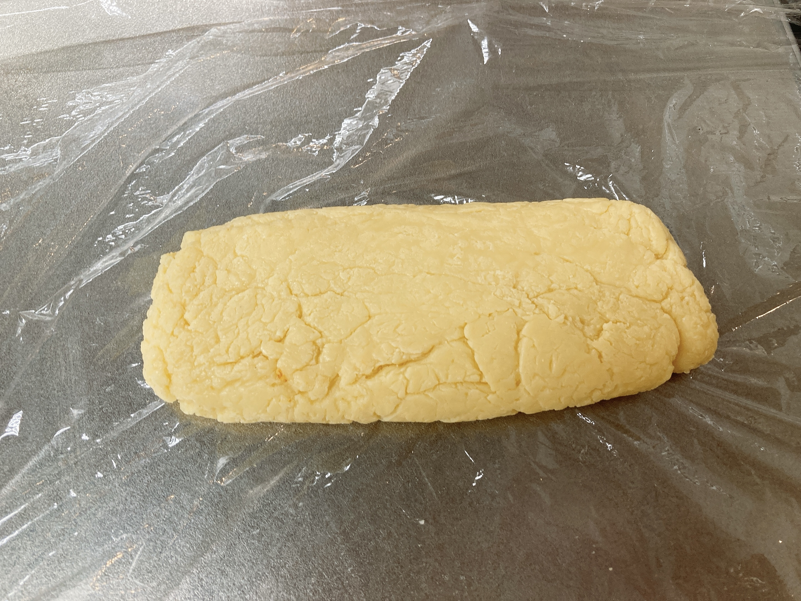

現実逃避
何もかも嫌になったので蘇を作った。
コロナ禍初期に流行った蘇。過去のツイートを検索してみると2020年の春だったらしい。とんでもない昔だ。まだ系所属すらしていないんじゃないか。
世間的には苦行寄りとされる蘇作り。無心で鍋の中の牛乳を混ぜ続けるだけの作業は、本当にもう何もしたくない人間の現実逃避にはぴったりだと思ったのでやることにした。スーパー行ったら本当に牛乳が山積みになっててびっくりした。
大昔の自分は2Lを煮詰めきっていたらしい。今回は大量に欲しいわけではないのでゆるっと1L。

このくるくる作業を目安2時間続けるだけの簡単なお仕事。この段階だとまだただのホットミルク。ちょっと分けてそのまま飲めばよかったかもしれない。
ぼこぼこ沸騰しない程度に加熱し続ける。しばらくすると微かに現れる薄膜を削いで、またしばらく待つ。蘇は古代の食べ物だが、ひたすらコンロを睨む様は現代人向け超高等火遊びといったところ(?)。

動画を残しても薄膜がわかりづらくて悲しい。少しずつ様子が変わっていくのが蘇作りの楽しいところ。
ソシャゲの日課を捌きながら無心でぐるぐるしていると、ある時から様子が変わる。

水分量が減って、泡がふつふつからぽこぽこに変わる。ホットケーキの生地を低温で無理やりかき混ぜるとこうなるのかもしれない。流石にもう牛乳とは言えない。乳製品苦手な人がこれを嗅いだら即座に吐くだろうし、この色の"牛乳"を出されたら私なら死を覚悟する。
なおかき混ぜている本人はハイテンションである。作業は佳境、液体ぐるぐるから固体ねりねりへ。

過去の自分が「艶が出てきたら終わり」とツイートに残していた。菓子作りなどに馴染んでいると、こういうむちむちした物体にはよく出会う。絶妙に可愛らしい。これはかなり固めの部類で、片手だと上手くひっくり返せないのが惜しい。

ずっとむにむにしていたいところだが、水分を飛ばしすぎてもよくないので鍋から引き上げてラップへ。なんかそれっぽい形に整えて、冷めたら冷蔵庫に突っ込む。
液体を煮詰めるだけで完成する蘇は、程よく自己肯定感を満たしてくれる。自分はただひたすら単純作業することへの適正が凄まじいので尚更。友人に情報系は向いていない1と言われて久しいが、まさしくそのとおりである。どうしようかね。
冷えて固まった蘇は、ちまちま切って食べる。水分を吹き飛ばしているので日持ちする。
5ミリほどの厚さに切るとよいとされている。そのまま食べると淡いミルクの気配が漂う謎の固体である。ここに蜂蜜などの甘味をのせればキャラメル、醤油などの塩分をのせればチーズへと化ける。
冷蔵庫にメープルシロップが眠っていたのでかけた。メープルシロップの蓋が硬いときは、湯などで温めると一瞬で開くので変に格闘しない方がよい。
後日生ハムに巻いたがそれはそれで美味かった。普段は生ハムをそのまま酒のつまみにしているが、蘇があると食べごたえがあってよい。
蘇作り、楽しい人にとっては楽しいので、興味がある人は年末にぜひ。フォロワーの情報系ガチプロ共にはおすすめしない2。